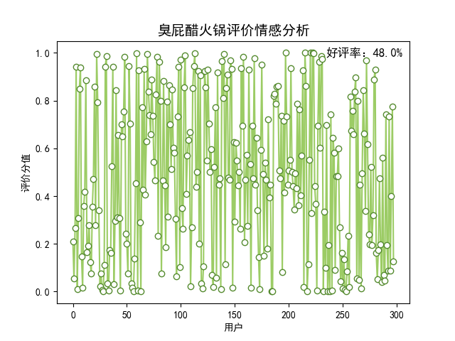

臭屁醋火锅，其核心材料为臭屁醋，又名“长寿醋”，相传起源于广东珠三角地区，距今已有千年历史。臭屁醋的食用方法多样，可以用来煲汤，也可以作为火锅的锅底，放入不同的食材进行涮煮。在佛山的三水、清远的佛冈、广州的花都和从化这等地区，人们在工作疲劳的时候会将臭屁醋作为解暑“饮料”直接饮用。虽然臭屁醋闻起来有一股酸馊怪味，但品尝起来酸爽甘香，搭配上各类食材做成火锅一起食用，多重的滋味让人欲罢不能。
制作流程
- 在锅中加入适量的臭屁醋和纯净水。将猪脚、鸡肉等耐煮的食材先放入锅内炖煮。
- 根据个人喜好放入各类食材进行涮煮即可。
历史文化
（1）历史传说
相传关于”臭屁醋“，还有一段感人的孝义故事。话说在元朝末年，到处兵荒马乱，民不聊生。当时的芦苞古镇也不例外。许多人为了躲避战乱而背井离乡。住在芦苞六榕古道旁的麦福母子两人却没有离开。麦福左脚有点跛，平时靠帮人放牛为生，家中母亲因中风而长年卧床，时年30岁仍没有讨到媳妇，母子两相依为命。战乱刚起时，同村的兄弟都劝麦福离家避祸，但麦福想到要是自己走了，病床中的母亲就肯定因无人照顾而不久于人世，带上母亲一起走吧，又怕年迈生病的母亲受不了颠沛流离的折磨，于是就决定留家中照顾母亲。麦妈也因劝不动儿子离去，只能天天垂泪。
打仗的日子，连饭也吃不上，还有谁家需要找人放牛呢？所以麦福母子朝不保夕，有时上顿吃剩饭，下顿吃草根。白天麦福挨家挨户讨饭，善心人了解麦福的情况，把残羹送给他。转眼，到了收割季节，麦福老远地一拐一拐的走到田间拾稻穗，拾回来的几捧稻穗，虽然饿得慌，但又不舍得一次吃完。于是麦福就把谷子刨成米，又担心被虫吃掉，就用锅炒香，放入坛中，用井水浸泡着，恐怕老鼠偷吃，就用碗底朝天盖着坛口，放水浸过碗沿。麦福想：时下是收割季节，帮乡亲打短工还勉强可以糊口，三个月后是农闲，没有工作，没有稻穗捡，就可以把坛中的米煮来充饥。不知不觉日子过得很快，外出逃战乱的乡亲也陆续返乡，乡亲的农活也不多了，但麦福每天仍然忙个不停，既要为母亲擦身按摩，又要两顿发愁的。
三个多月后的一天，两天讨不到饭的麦福打开坛子，迎面扑来一阵酸臭味，甚感恶心。因为两母子两天粒米未进，麦福管不了那么多，淘起两碗放进锅里煮开，把米白色的粥水端到母亲床头，说：“妈，孩儿不孝，没本事让你吃上饭，现在只能给你喝变质酸臭的粥水，”麦妈不忍看见含泪的儿子伤心，就忍着臭味，大口大口地喝起来。直喝得大汗淋漓、通体舒泰，边喝边称这粥水好喝。接下来的十多天，麦福两母子每顿都吃这些的汤水。半个月后，麦妈的脸色泛红，原来不能动的左手左脚竟然奇迹般地活动了，过了没多久，还可以下床慢慢走动。
乡亲回到家乡，听说麦妈卧床十多年，竟然吃这种粥水治愈了，都争相前来问个究竟，麦妈热情为来访的乡亲端上这种粥水品尝，乡亲们都称这种闻来臭、喝来香的粥水为“臭屁醋”，乡亲喝完都很自觉地付一点小费。后来母子两干脆开了一间小店面，生活越过越红火。为了味道更好，麦妈把制作“臭屁醋”时把原材料中的炒米隔起，煮时放进生姜和猪手、梅菜等，这样“臭屁醋”就成为了一种烫饮了。
麦福不久娶上一位俏媳妇，一家生活得红红火火。麦妈为了感谢上天有好生之德，把制作“臭屁醋”的方法告诉乡亲们。因为“臭屁醋”有消杀细菌、软化血管、延年益寿的作用，人们称其为“长寿醋”。


评价词云图
评价情感分析
